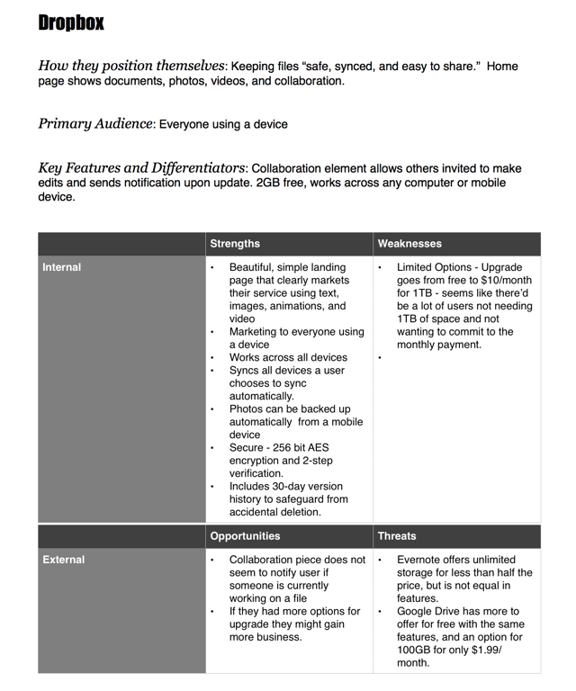
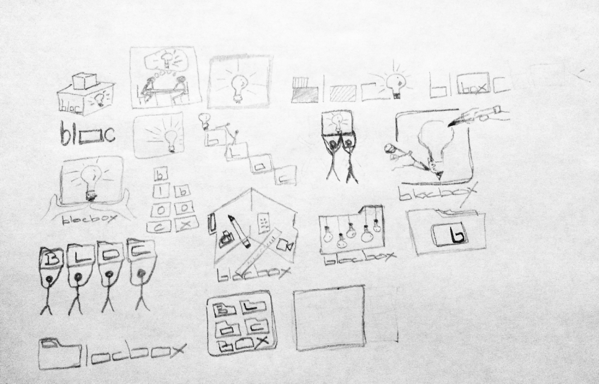
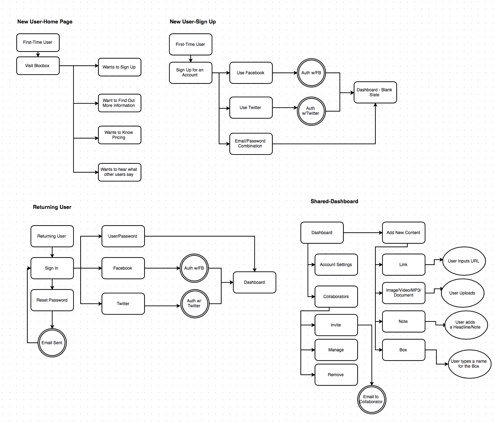
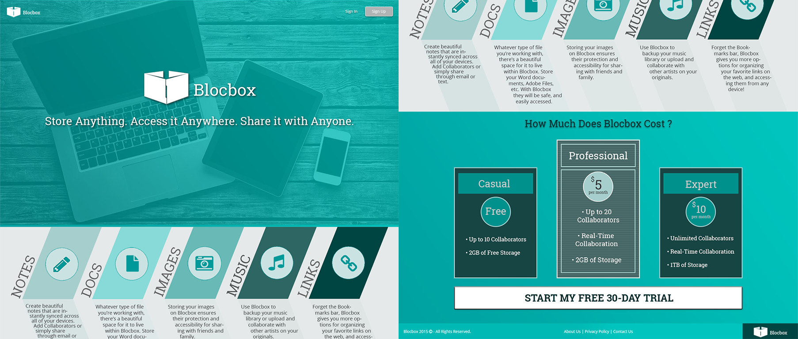
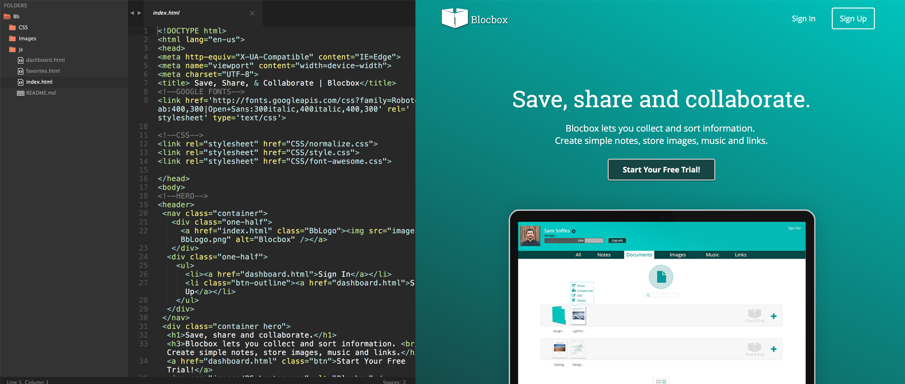

BLOCBOX

User Research
Research was a word that used to just sound boring to me. I mean if someone ever said, “Hey Rich, come and conduct some research with us.” My response would probably be, "Did you really just say that?" Followed by, "How 'bout no." Prior to being introduced to the world of UX Design, I never thought of someone being both a Researcher and a Designer. In my mind those were two very different personalities.
So when I started my first project at BLOC, and discovered that I needed to create a survey, and do some competitive analysis, my mindset was, “When do we get to the fun part?” The funny thing is that by the time I got to my last project with BLOC, I couldn’t wait to see what the responses would be to my survey, and I couldn’t wait to start designing something around the results! Blocbox, was my introduction to the design process, and the beginning of a deeper appreciation for quality design everywhere. It began with Google Forms, and reaching a small group of people familiar with cloud based storage, and its capabilities.
It wasn’t until I got the results back from my survey that it really clicked for me just how helpful a survey can be to a design. Right away I could see trends with how people were browsing online, bookmarking, what they were saving, and how they used it for collaboration.
After analyzing these results, I created User Personas for a quick snapshot of who I would be designing for.
Competitive Analysis
I learned from my survey that 56% of my respondents used Dropbox for their cloud storage, and the rest were evenly divided between Google Drive, and iCloud. It was time to take a closer look at what Dropbox was doing right, and where there were opportunities to possibly gain some of their market share.
Analyzing the competition really helped bring to light how Blocbox could enter the market with a fresh offering. Now it was time to brand Blocbox.
Branding
At Bloc I learned that branding a business is a process that must begin with a solid understanding of what the business offers. From there, creating a mind map can be extremely helpful for generating ideas that lead to sketches, which lead to a rough draft to be perfected using a vector based program like Illustrator or Sketch. Here are a few images to demonstrate my process for branding Blocbox:
After discussing logos with my mentor, and reviewing different logos of major brands, it was clear I was trying to fit too much into a symbol. I decided to go back to the basics of the service, and the thought just hit me to create a box out of two file folders. It was simple, and it hinted at the heart of the service provided.
At this point I was challenged to look at the logo at the smallest size that it would be seen and remove what was unneccesary. Here's the final product:
The next step was to choose my fonts and colors to use on the web site. Using Adobe Color, I landed on shades of teal to give Blocbox a professional, and bright feel. I chose Roboto Slab as the Display Font because I thought the "boxiness" of it paired well with the name and logo.

User Flows
Since Blocbox would not be a fully-functional web site, I wrote the user flows to reflect only the primary functions of the service. Once I had identified those functions, I was left with a clear map to start wireframing.
Wireframing
I started the wireframes for the Blocbox landing page using Balsamiq. The goal for the landing page was simply to communicate what Blocbox offers, and get users to sign up. At this point I knew that I wanted a simple hero image that stretched across the screen behind the words "Store Anything. Access it Anywhere. Share it with Anyone." I believed that very clearly communicated the primary function of Blocbox. The next step was to communicate some key features of Blocbox, and finally a Call to Action.

Once I had completed the wireframes in Balsamiq it was time to take them a step further in Photoshop, but still keep them in black and white.

From there I created a full-color wireframe, and yes, it is a different design, and no, I would never completely change a design from a hi-fi wireframe unless a client specifically asked for a re-design. This was for school, and I was new to Photoshop, and I had fun!

I created nearly enough Photoshop wireframes to cover all of the functions of Blocbox, and imagining all of the aspects that the site would need for a positive user experience was more difficult than I thought it would be.
I created a prototype using inVision, and had my designs tested using Peek, and UsabilityHub. This is where I really developed an appreciation, and an understanding of how quality designs are born.
Coding
I ended up following a BLOC tutorial for the coding of Blocbox. You can view the deployed version of the site here.
